北韓發射彈道飛彈
北韓以試射展示打擊能力，常與美韓演習或政治時間點相關；日本、南韓會同步發布警報與軌跡。
報導標題：North Korea Fires Missiles and Kim Yo Jong Slams the Door on Any Trump-Kim APEC Talks 來源 ↗
公開來源整理｜最後更新 2026-11-07 20:45（台北）｜每 3 小時更新，出事時加開
📌 11/7（六）每日摘要｜台海 2 級升溫：中國海警進入金門、馬祖限制水域或登檢台灣船隻｜美伊 1 級：新制裁或航空公司停飛｜歐洲北約 2 級升溫：戰機緊急升空、機場關閉或交戰規則變更｜烏俄 2 級升溫：俄軍飛彈與無人機 7 日平均｜朝鮮半島 2 級升溫：北韓彈道飛彈發射｜南海 1 級常態｜以巴紅海 3 級高度警戒。降溫訊號：美伊、烏俄。市場異常：台股加權指數 -4.5%、台積電 -4.7%、美元兌新台幣 +0.9%。
沒有指標超過門檻
沒有指標超過門檻
北韓以試射展示打擊能力，常與美韓演習或政治時間點相關；日本、南韓會同步發布警報與軌跡。
報導標題：North Korea Fires Missiles and Kim Yo Jong Slams the Door on Any Trump-Kim APEC Talks 來源 ↗
打擊黎巴嫩、敘利亞、伊拉克或葉門目標，衝突有擴大到多國的風險。
報導標題：Israel strikes south Lebanon after stepping back from Beirut attack 來源 ↗
新一輪制裁或出口管制，反映外交施壓升級。
報導標題：US Treasury to Broaden Scope of Secondary Sanctions on Iran, Source Says 來源 ↗
北約國家為因應俄國攻擊而緊急升空或關閉機場，代表前線緊張升高。
報導標題：Romanian F-16 Jets Scrambled After Target Spotted Near Sulina 來源 ↗
衝突雙方通話、會談或停火協商，可能讓緊張暫緩（不會降低燈號）。
報導標題：First Lady Melania Trump Unites Russia and Ukraine at The White House Following Historic Ceasefire 來源 ↗
已知項目未觸發（7/7 項有資料）
已知項目未觸發（4/4 項有資料）
已知項目未觸發（1/1 項有資料）
已知項目未觸發（4/5 項有資料）
已知項目未觸發（2/2 項有資料）
已知項目未觸發（3/7 項有資料）
🕊️ 11/07 24 家媒體報導降溫訊號（通話、會談、停火）：Global Oil Prices Drop Sharply Amid Reports of Pote
已知項目未觸發（3/3 項有資料）
已知項目未觸發（4/4 項有資料）
已知項目未觸發（4/4 項有資料）
已知項目未觸發（1/1 項有資料）
已知項目未觸發（5/6 項有資料）
無法判定（0/1 項有資料）
🕊️ 11/07 69 家媒體報導降溫訊號（通話、會談、停火）：First Lady Melania Trump Unites Russia and Ukraine
已知項目未觸發（1/1 項有資料）
北韓以試射展示打擊能力，常與美韓演習或政治時間點相關；日本、南韓會同步發布警報與軌跡。
報導標題：Here’s why Pyongyang is testing an array of missile capabilities 來源 ↗
打擊黎巴嫩、敘利亞、伊拉克或葉門目標，衝突有擴大到多國的風險。
報導標題：Israel strikes south Lebanon after stepping back from Beirut attack 來源 ↗
北韓以試射展示打擊能力，常與美韓演習或政治時間點相關；日本、南韓會同步發布警報與軌跡。
報導標題：North Korea fires nearly dozen ballistic missiles after South Korea's dialogue offer 來源 ↗
北約國家為因應俄國攻擊而緊急升空或關閉機場，代表前線緊張升高。
報導標題：Romanian F-16 Jets Scrambled After Target Spotted Near Sulina 來源 ↗
紅海與亞丁灣航運受威脅，會推高歐亞運費、保費與油價。
報導標題：Yemen’s Houthis Say They Targeted Two Saudi Tankers; Source Says Encelia Hit by Missile 來源 ↗
北韓以試射展示打擊能力，常與美韓演習或政治時間點相關；日本、南韓會同步發布警報與軌跡。
報導標題：North Korea Fires Missiles and Kim Yo Jong Slams the Door on Any Trump-Kim APEC Talks 來源 ↗
衝突雙方通話、會談或停火協商，可能讓緊張暫緩（不會降低燈號）。
報導標題：First Lady Melania Trump Unites Russia and Ukraine at The White House Following Historic Ceasefire 來源 ↗
新一輪制裁或出口管制，反映外交施壓升級。
報導標題：US Treasury to Broaden Scope of Secondary Sanctions on Iran, Source Says 來源 ↗
衝突雙方通話、會談或停火協商，可能讓緊張暫緩（不會降低燈號）。
報導標題：Global Oil Prices Drop Sharply Amid Reports of Potential Iran–U.S. Peace Talks 來源 ↗
新一輪制裁或出口管制，反映外交施壓升級。
報導標題：US slaps sanctions on Indian, Turkish companies and people for aiding Iran 來源 ↗
衝突雙方通話、會談或停火協商，可能讓緊張暫緩（不會降低燈號）。
報導標題：US midterm rout puts Trump's team, Iran war and Ukraine talks in doubt 來源 ↗
衝突雙方通話、會談或停火協商，可能讓緊張暫緩（不會降低燈號）。
報導標題：LIVE NOW: First Lady Melania Trump Delivers Remarks on Russia–Ukraine Ceasefire in Kherson Region 來源 ↗
航空公司暫停飛往衝突地區，代表民間評估風險升高。
報導標題：In October, Ukrainian drones caused the cancellation of over 30,000 flights in Russia. 來源 ↗
歐洲各國增加國防預算、恢復徵兵或發放民防手冊，反映對俄威脅的評估升高。
報導標題：Klopp Recalls Fullkrug, Teen Sensation Mohya Earns Maiden Germany Call-Up 來源 ↗
歐洲各國增加國防預算、恢復徵兵或發放民防手冊，反映對俄威脅的評估升高。
報導標題：Poland’s constitutional crisis unfolds amid massive rearmament 來源 ↗
歐洲各國增加國防預算、恢復徵兵或發放民防手冊，反映對俄威脅的評估升高。
報導標題：Poland, Norway and Finland launched reservist training programs for a possible war with Russia 來源 ↗
歐洲各國增加國防預算、恢復徵兵或發放民防手冊，反映對俄威脅的評估升高。
報導標題：Germany Gen Z Protest Turns Violent as Hamburg Police Crack Down on Anti-Conscription Rally 來源 ↗
歐洲各國增加國防預算、恢復徵兵或發放民防手冊，反映對俄威脅的評估升高。
報導標題：Germany’s ‘Gen Z’ Stage Nationwide Protests Over Conscription and Living Costs 來源 ↗
晶片、稀土等關鍵材料的出口管制，牽動台灣半導體供應鏈。
報導標題：Chinese AI Firm Slips Past US Chip Ban Through European Back Door 來源 ↗
另有 5 則，見時間軸
衝突雙方通話、會談或停火協商，可能讓緊張暫緩（不會降低燈號）。
報導標題：First Lady Melania Trump Unites Russia and Ukraine at The White House Following Historic Ceasefire 來源 ↗
新一輪制裁或出口管制，反映外交施壓升級。
報導標題：US Treasury to Broaden Scope of Secondary Sanctions on Iran, Source Says 來源 ↗
新一輪制裁或出口管制，反映外交施壓升級。
報導標題：US slaps sanctions on Indian, Turkish companies and people for aiding Iran 來源 ↗
另有 19 則，見時間軸
新一輪制裁或出口管制，反映外交施壓升級。
報導標題：Russian ambassador calls on Parliament to lift sanctions on Russia 來源 ↗
安理會表決、IAEA 報告或北約峰會等正式行動。
報導標題：UN Mission Ends After Russia Vetoes Western Sahara Resolution 來源 ↗
衝突雙方通話、會談或停火協商，可能讓緊張暫緩（不會降低燈號）。
報導標題：Russia-Ukraine Truce in Kherson Set to End as Extension Remains Uncertain 來源 ↗
另有 1 則，見時間軸
航空公司暫停飛往衝突地區，代表民間評估風險升高。
報導標題：In October, Ukrainian drones caused the cancellation of over 30,000 flights in Russia. 來源 ↗
新一輪制裁或出口管制，反映外交施壓升級。
報導標題：Ukraine launches drone barrage on Russia as Trump holds off on new sanctions 來源 ↗
北約國家為因應俄國攻擊而緊急升空或關閉機場，代表前線緊張升高。
報導標題：Massive drone attacks on Ukrainian ports along the Danube / F-16 aircraft were scrambled in Romania 來源 ↗
北韓以試射展示打擊能力，常與美韓演習或政治時間點相關；日本、南韓會同步發布警報與軌跡。
報導標題：Here’s why Pyongyang is testing an array of missile capabilities 來源 ↗
北韓以試射展示打擊能力，常與美韓演習或政治時間點相關；日本、南韓會同步發布警報與軌跡。
報導標題：North Korea fires nearly dozen ballistic missiles after South Korea's dialogue offer 來源 ↗
北韓以試射展示打擊能力，常與美韓演習或政治時間點相關；日本、南韓會同步發布警報與軌跡。
報導標題：North Korea Fires Missiles and Kim Yo Jong Slams the Door on Any Trump-Kim APEC Talks 來源 ↗
另有 2 則，見時間軸
南北韓前線的直接摩擦，容易引發報復循環。
報導標題：South Korea Joins US Space Force Partner to Win for First Time Amid North Korean GPS Jamming Surge 來源 ↗
衝突雙方通話、會談或停火協商，可能讓緊張暫緩（不會降低燈號）。
報導標題：Global Oil Prices Drop Sharply Amid Reports of Potential Iran–U.S. Peace Talks 來源 ↗
衝突雙方通話、會談或停火協商，可能讓緊張暫緩（不會降低燈號）。
報導標題：Ari Fleischer to Vance: Iran War Wasn’t the Problem, the Ceasefire Was 來源 ↗
新一輪制裁或出口管制，反映外交施壓升級。
報導標題：Iran Nearly Doubles Its Hormuz Blacklist to 240 Ships and Targets Sinokor's Entire Fleet 來源 ↗
衝突雙方通話、會談或停火協商，可能讓緊張暫緩（不會降低燈號）。
報導標題：Iran has a 2-day plan to reopen strait, resume nuclear talks with US, and other Mideast news 來源 ↗
另有 2 則，見時間軸
打擊黎巴嫩、敘利亞、伊拉克或葉門目標，衝突有擴大到多國的風險。
報導標題：Israel strikes south Lebanon after stepping back from Beirut attack 來源 ↗
打擊黎巴嫩、敘利亞、伊拉克或葉門目標，衝突有擴大到多國的風險。
報導標題：IDF says Lebanon strike, said to kill 1, targeted suspects observing Israeli troops 來源 ↗
打擊黎巴嫩、敘利亞、伊拉克或葉門目標，衝突有擴大到多國的風險。
報導標題：Israeli Strikes Destroy Abandoned Post in Southwest Syria 來源 ↗
真主黨、哈瑪斯或胡塞對以色列發動攻擊，常引來以軍報復。
報導標題：MP Salim Sayegh, speaking to MFM: The international community previously told us that Hezbollah’s weapons were an intern 來源 ↗
另有 6 則，見時間軸
歐洲各國增加國防預算、恢復徵兵或發放民防手冊，反映對俄威脅的評估升高。
報導標題：Klopp Recalls Fullkrug, Teen Sensation Mohya Earns Maiden Germany Call-Up 來源 ↗
歐洲各國增加國防預算、恢復徵兵或發放民防手冊，反映對俄威脅的評估升高。
報導標題：Poland’s constitutional crisis unfolds amid massive rearmament 來源 ↗
歐洲各國增加國防預算、恢復徵兵或發放民防手冊，反映對俄威脅的評估升高。
報導標題：Poland, Norway and Finland launched reservist training programs for a possible war with Russia 來源 ↗
另有 11 則，見時間軸
衝突雙方通話、會談或停火協商，可能讓緊張暫緩（不會降低燈號）。
報導標題：Taiwan region can attend APEC meeting by following one-China principle, relevant MoU and practices: mainland spokesperso 來源 ↗
衝突雙方通話、會談或停火協商，可能讓緊張暫緩（不會降低燈號）。
報導標題：Taiwan accuses China of trying to downgrade its status ahead of APEC summit 來源 ↗
衝突雙方通話、會談或停火協商，可能讓緊張暫緩（不會降低燈號）。
報導標題：Taiwan protests to China over APEC summit invitation arrangements — Taipei Times 來源 ↗
依據：AEI／ISW｜本站自行整理，非全文翻譯
依據：The Korea Times（Yonhap）、The Korea Herald、The Korea Herald（Yonhap）｜本站自行整理，非全文翻譯
依據：Inquirer.net、Inquirer.net｜本站自行整理，非全文翻譯
依據：Critical Threats Project / ISW｜本站自行整理，非全文翻譯
依據：ISW／CTP（AEI）｜本站自行整理，非全文翻譯
依據：ISW／Critical Threats、TheJournal.ie｜本站自行整理，非全文翻譯
依據：Kyiv Post（轉載ISW評估）｜本站自行整理，非全文翻譯
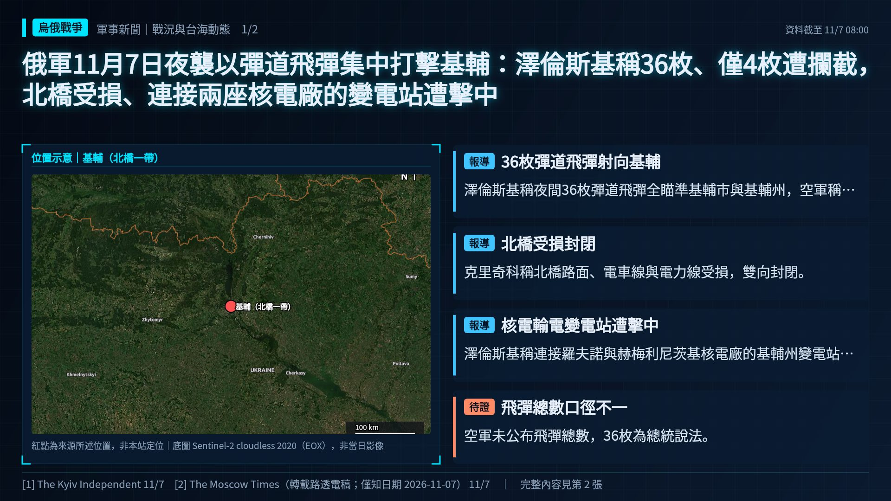
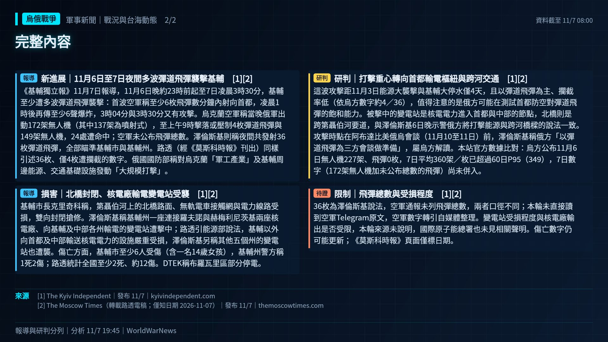
《基輔獨立報》11月7日報導，11月6日晚約23時前起至7日凌晨3時30分，基輔至少遭多波彈道飛彈襲擊：首波空軍稱至少6枚飛彈數分鐘內射向首都，凌晨1時後再傳至少6聲爆炸，3時04分與3時30分又有攻擊。烏克蘭空軍稱當晚俄軍出動172架無人機（其中137架為噴射式），至上午9時擊落或壓制4枚彈道飛彈與149架無人機，24處遭命中；空軍未公布飛彈總數。澤倫斯基則稱夜間共發射36枚彈道飛彈，全部瞄準基輔市與基輔州。路透（經《莫斯科時報》刊出）同樣引述36枚、僅4枚遭攔截的數字。俄國國防部稱對烏克蘭「軍工產業」及基輔周邊能源、交通基礎設施發動「大規模打擊」。
基輔市長克里奇科稱，第聶伯河上的北橋路面、無軌電車接觸網與電力線路受損，雙向封閉搶修。澤倫斯基稱基輔州一座連接羅夫諾與赫梅利尼茨基兩座核電廠、向基輔及中部各州輸電的變電站遭擊中；路透引能源部說法，基輔以外向首都及中部輸送核電電力的設施嚴重受損，澤倫斯基另稱其他五個州的變電站也遭襲。傷亡方面，基輔市至少6人受傷（含一名14歲女孩），基輔州警方稱1死2傷；路透統計全國至少2死、約12傷。DTEK稱布羅瓦里區部分停電。
這波攻擊距11月3日能源大襲擊與基輔大停水僅4天，且以彈道飛彈為主、攔截率低（依烏方數字約4／36），值得注意的是俄方可能在測試首都防空對彈道飛彈的飽和能力。被擊中的變電站是核電電力進入首都與中部的節點，北橋則是跨第聶伯河要道，與澤倫斯基6日晚示警俄方將打擊能源與跨河橋樑的說法一致。攻擊時點在阿布達比美俄烏會談（11月10至11日）前，澤倫斯基稱俄方「以彈道飛彈為三方會談做準備」，屬烏方解讀。本站官方數據比對：烏方公布11月6日無人機227架、飛彈0枚，7日平均360架／枚已超過60日P95（349），7日數字（172架無人機加未公布總數的飛彈）尚未併入。
36枚為澤倫斯基說法，空軍通報未列飛彈總數，兩者口徑不同；本輪未直接讀到空軍Telegram原文，空軍數字轉引自媒體整理。變電站受損程度與核電廠輸出是否受限，本輪來源未說明，國際原子能總署也未見相關聲明。傷亡數字仍可能更新；《莫斯科時報》頁面僅標日期。
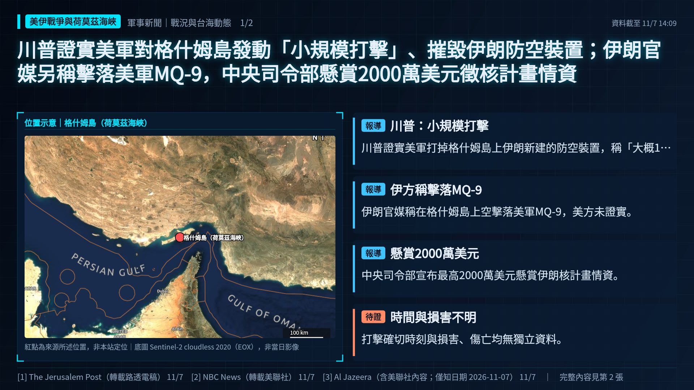
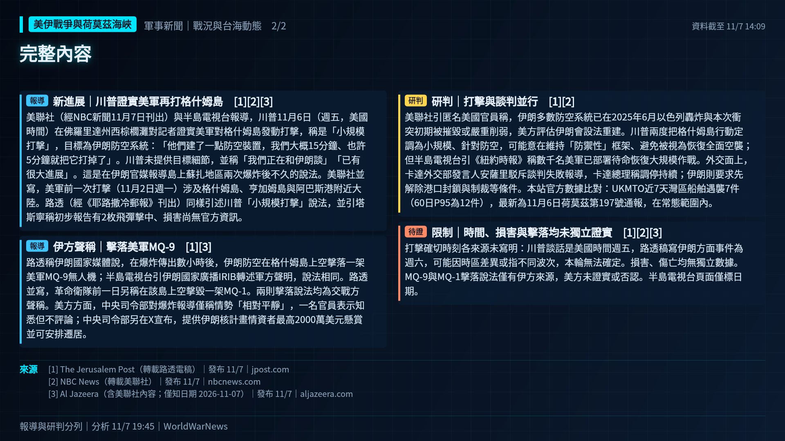
美聯社（經NBC新聞11月7日刊出）與半島電視台報導，川普11月6日（週五，美國時間）在佛羅里達州西棕櫚灘對記者證實美軍對格什姆島發動打擊，稱是「小規模打擊」，目標為伊朗防空系統：「他們建了一點防空裝置，我們大概15分鐘、也許5分鐘就把它打掉了」。川普未提供目標細節，並稱「我們正在和伊朗談」「已有很大進展」。這是在伊朗官媒報導島上蘇扎地區兩次爆炸後不久的說法。美聯社並寫，美軍前一次打擊（11月2日週一）涉及格什姆島、亨加姆島與阿巴斯港附近大陸。路透（經《耶路撒冷郵報》刊出）同樣引述川普「小規模打擊」說法，並引塔斯寧稱初步報告有2枚飛彈擊中、損害尚無官方資訊。
路透稱伊朗國家媒體說，在爆炸傳出數小時後，伊朗防空在格什姆島上空擊落一架美軍MQ-9無人機；半島電視台引伊朗國家廣播IRIB轉述軍方聲明，說法相同。路透並寫，革命衛隊前一日另稱在該島上空擊毀一架MQ-1。兩則擊落說法均為交戰方聲稱。美方方面，中央司令部對爆炸報導僅稱情勢「相對平靜」，一名官員表示知悉但不評論；中央司令部另在X宣布，提供伊朗核計畫情資者最高2000萬美元懸賞並可安排遷居。
美聯社引匿名美國官員稱，伊朗多數防空系統已在2025年6月以色列轟炸與本次衝突初期被摧毀或嚴重削弱，美方評估伊朗會設法重建。川普兩度把格什姆島行動定調為小規模、針對防空，可能意在維持「防禦性」框架、避免被視為恢復全面空襲；但半島電視台引《紐約時報》稱數千名美軍已部署待命恢復大規模作戰。外交面上，卡達外交部發言人安薩里駁斥談判失敗報導，卡達總理稱調停持續；伊朗則要求先解除港口封鎖與制裁等條件。本站官方數據比對：UKMTO近7天灣區船舶遇襲7件（60日P95為12件），最新為11月6日荷莫茲第197號通報，在常態範圍內。
打擊確切時刻各來源未寫明：川普談話是美國時間週五，路透稿寫伊朗方面事件為週六，可能因時區差異或指不同波次，本輪無法確定。損害、傷亡均無獨立數據。MQ-9與MQ-1擊落說法僅有伊方來源，美方未證實或否認。半島電視台頁面僅標日期。
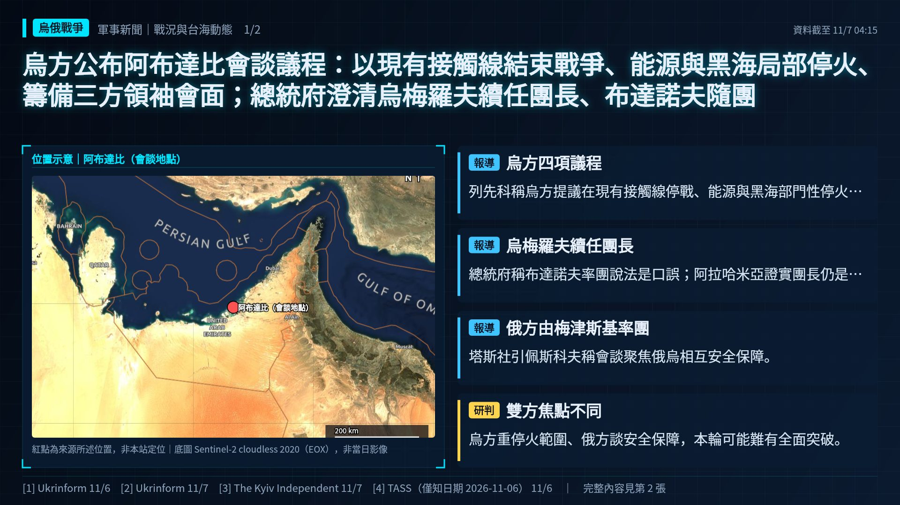
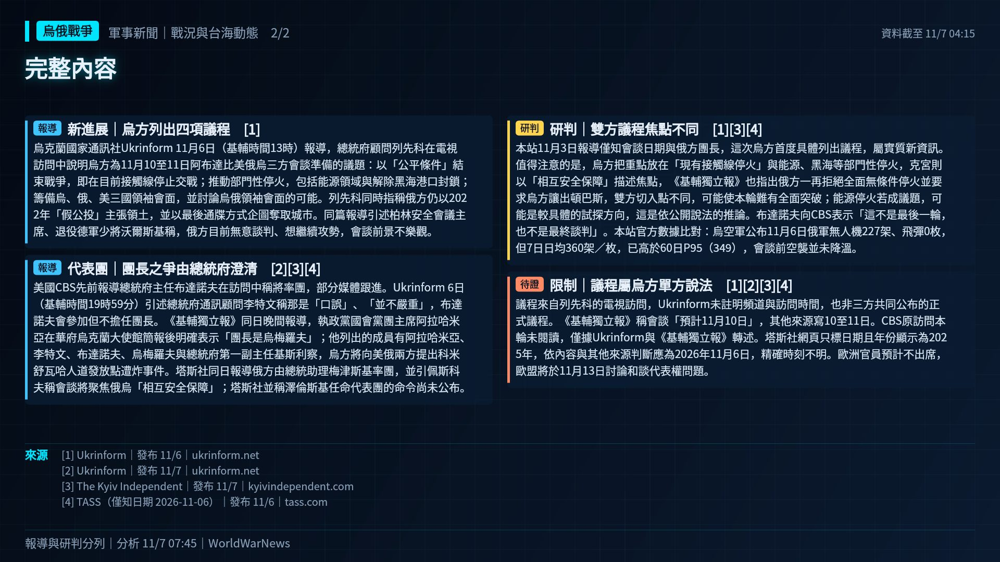
烏克蘭國家通訊社Ukrinform 11月6日（基輔時間13時）報導，總統府顧問列先科在電視訪問中說明烏方為11月10至11日阿布達比美俄烏三方會談準備的議題：以「公平條件」結束戰爭，即在目前接觸線停止交戰；推動部門性停火，包括能源領域與解除黑海港口封鎖；籌備烏、俄、美三國領袖會面，並討論烏俄領袖會面的可能。列先科同時指稱俄方仍以2022年「假公投」主張領土，並以最後通牒方式企圖奪取城市。同篇報導引述柏林安全會議主席、退役德軍少將沃爾斯基稱，俄方目前無意談判、想繼續攻勢，會談前景不樂觀。
美國CBS先前報導總統府主任布達諾夫在訪問中稱將率團，部分媒體跟進。Ukrinform 6日（基輔時間19時59分）引述總統府通訊顧問李特文稱那是「口誤」、「並不嚴重」，布達諾夫會參加但不擔任團長。《基輔獨立報》同日晚間報導，執政黨國會黨團主席阿拉哈米亞在華府烏克蘭大使館簡報後明確表示「團長是烏梅羅夫」；他列出的成員有阿拉哈米亞、李特文、布達諾夫、烏梅羅夫與總統府第一副主任基斯利察，烏方將向美俄兩方提出科米舒瓦哈人道發放點遭炸事件。塔斯社同日報導俄方由總統助理梅津斯基率團，並引佩斯科夫稱會談將聚焦俄烏「相互安全保障」；塔斯社並稱澤倫斯基任命代表團的命令尚未公布。
本站11月3日報導僅知會談日期與俄方團長，這次烏方首度具體列出議程，屬實質新資訊。值得注意的是，烏方把重點放在「現有接觸線停火」與能源、黑海等部門性停火，克宮則以「相互安全保障」描述焦點，《基輔獨立報》也指出俄方一再拒絕全面無條件停火並要求烏方讓出頓巴斯，雙方切入點不同，可能使本輪難有全面突破；能源停火若成議題，可能是較具體的試探方向，這是依公開說法的推論。布達諾夫向CBS表示「這不是最後一輪，也不是最終談判」。本站官方數據比對：烏空軍公布11月6日俄軍無人機227架、飛彈0枚，但7日日均360架／枚，已高於60日P95（349），會談前空襲並未降溫。
議程來自列先科的電視訪問，Ukrinform未註明頻道與訪問時間，也非三方共同公布的正式議程。《基輔獨立報》稱會談「預計11月10日」，其他來源寫10至11日。CBS原訪問本輪未閱讀，僅據Ukrinform與《基輔獨立報》轉述。塔斯社網頁只標日期且年份顯示為2025年，依內容與其他來源判斷應為2026年11月6日，精確時刻不明。歐洲官員預計不出席，歐盟將於11月13日討論和談代表權問題。
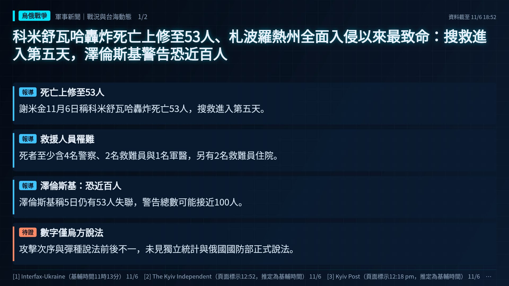
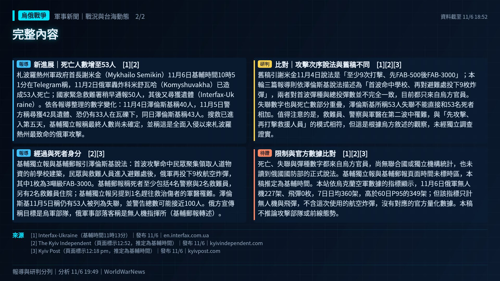
札波羅熱州軍政府首長謝米金（Mykhailo Semikin）11月6日基輔時間10時51分在Telegram稱，11月2日俄軍轟炸科米舒瓦哈（Komyshuvakha）已造成53人死亡；國家緊急救難署稍早通報50人，其後又尋獲遺體（Interfax-Ukraine）。依各報導整理的數字變化：11月4日澤倫斯基稱40人，11月5日警方稱尋獲42具遺體、恐仍有33人在瓦礫下，同日澤倫斯基稱43人。搜救已進入第五天，基輔獨立報稱最終人數尚未確定，並稱這是全面入侵以來札波羅熱州最致命的俄軍攻擊。
基輔獨立報與基輔郵報引澤倫斯基說法：首波攻擊命中民眾聚集領取人道物資的前學校建築，民眾與救難人員進入避難處後，俄軍再投下9枚航空炸彈，其中1枚為3噸級FAB-3000。基輔郵報稱死者至少包括4名警察與2名救難員，另有2名救難員住院；基輔獨立報另提到1名趕往救治傷者的軍醫罹難。澤倫斯基11月5日稱仍有53人被列為失聯，並警告總數可能接近100人。俄方宣傳稱目標是烏軍部隊，俄軍事部落客稱是無人機指揮所（基輔郵報轉述）。
舊稿引謝米金11月4日說法是「至少9次打擊、先FAB-500後FAB-3000」；本輪三篇報導則依澤倫斯基說法描述為「首波命中學校、再對避難處投下9枚炸彈」，兩者對首波彈種與總投彈數並不完全一致，目前都只來自烏方官員。失聯數字也與死亡數部分重疊，澤倫斯基所稱53人失聯不能直接和53名死者相加。值得注意的是，救難員、警察與軍醫在第二波中罹難，與「先攻擊、再打擊救援人員」的模式相符，但這是根據烏方敘述的觀察，未經獨立調查證實。
死亡、失聯與彈種數字都來自烏方官員，尚無聯合國或獨立機構統計，也未讀到俄國國防部的正式說法。基輔獨立報與基輔郵報頁面時間未標時區，本稿推定為基輔時間。本站依烏克蘭空軍數據的指標顯示，11月6日俄軍無人機227架、飛彈0枚，7日日均360架，高於60日P95的349架；但該指標只計無人機與飛彈，不含這次使用的航空炸彈，沒有對應的官方量化數據。本稿不推論攻擊部隊或前線態勢。
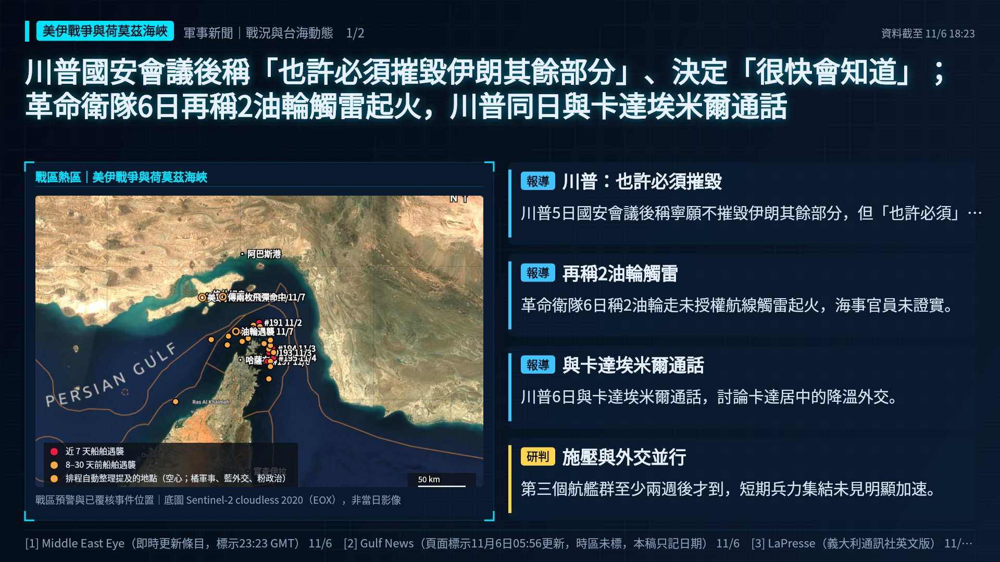
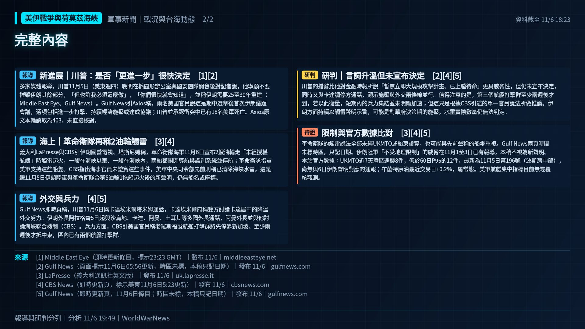
多家媒體報導，川普11月5日（美東週四）晚間在橢圓形辦公室與國安團隊開會後對記者說，他寧願不要摧毀伊朗其餘部分，「但也許我必須這麼做」，「你們很快就會知道」，並稱伊朗需要25至30年重建（Middle East Eye、Gulf News）。Gulf News引Axios稱，兩名美國官員說這是期中選舉後首次伊朗議題會議，選項包括進一步打擊、持續經濟施壓或達成協議；川普並承認衝突中已有18名美軍死亡。Axios原文本輪讀取為403，未直接核對。
義大利LaPresse與CBS引伊朗國營電視、塔斯尼姆稱，革命衛隊海軍11月6日宣布2艘油輪走「未經授權航線」時觸雷起火，一艘在海峽以東、一艘在海峽內，兩船都關閉導航與識別系統並停航；革命衛隊指責美軍支持這些船隻。CBS指出海事官員未證實這些事件，美軍中央司令部先前則稱已清除海峽水雷。這是繼11月5日伊朗陸軍與革命衛隊合稱5油輪1拖船起火後的新聲明，仍無船名或座標。
Gulf News即時頁稱，川普11月6日與卡達埃米爾塔米姆通話，卡達埃米爾府稱雙方討論卡達居中的降溫外交努力。伊朗外長阿拉格齊5日起與沙烏地、卡達、阿曼、土耳其等多國外長通話，阿曼外長並與他討論海峽聯合機制（CBS）。兵力方面，CBS引美國官員稱老羅斯福號航艦打擊群將先停靠新加坡、至少兩週後才抵中東，區內已有兩個航艦打擊群。
川普的措辭比他對金融時報所說「暫無立即大規模攻擊計畫、已上膛待命」更具威脅性，但仍未宣布決定，同時又與卡達調停方通話，顯示施壓與外交兩條線並行。值得注意的是，第三個航艦打擊群至少兩週後才到，若以此衡量，短期內的兵力集結並未明顯加速；但這只是根據CBS引述的單一官員說法所做推論。伊朗方面持續以觸雷聲明示警，可能是對華府決策期的施壓，水雷實際數量仍無法判定。
革命衛隊的觸雷說法全部未經UKMTO或船東證實，也可能與先前聲稱的船隻重複。Gulf News兩頁時間未標時區，只記日期。伊朗陸軍「不受地理限制」的威脅在11月1至3日已有報導，本稿不視為新聲明。本站官方數據：UKMTO近7天灣區遇襲8件，低於60日P95的12件，最新為11月5日第196號（波斯灣中部），尚無與6日伊朗聲明對應的通報；布蘭特原油最近交易日+0.2%，屬常態。美軍航艦集中指標目前無經覆核觀測。
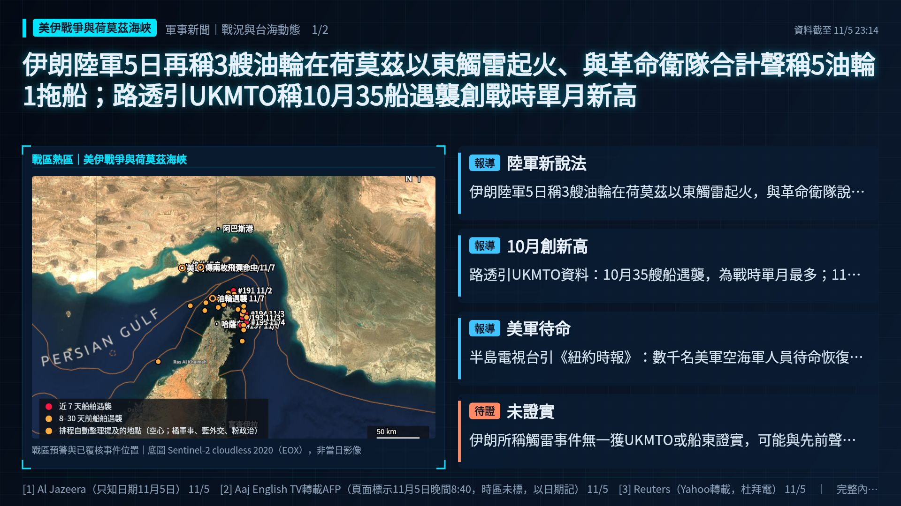
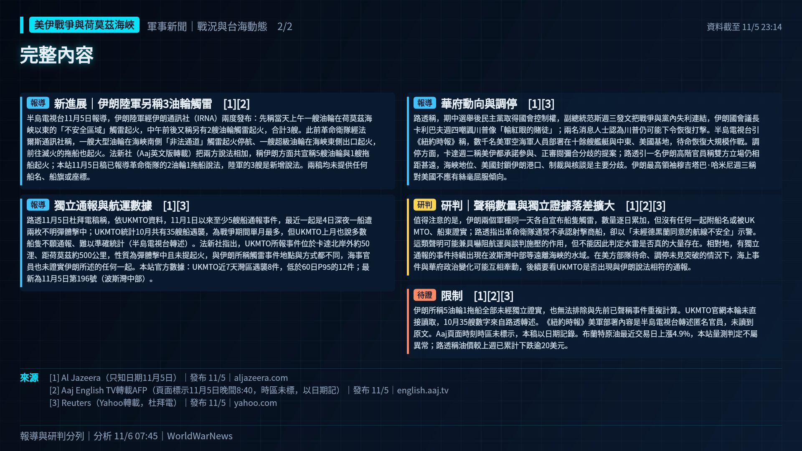
半島電視台11月5日報導，伊朗陸軍經伊朗通訊社（IRNA）兩度發布：先稱當天上午一艘油輪在荷莫茲海峽以東的「不安全區域」觸雷起火，中午前後又稱另有2艘油輪觸雷起火，合計3艘。此前革命衛隊經法爾斯通訊社稱，一艘大型油輪在海峽南側「非法通道」觸雷起火停航、一艘超級油輪在海峽東側出口起火，前往滅火的拖船也起火。法新社（Aaj英文版轉載）把兩方說法相加，稱伊朗方面共宣稱5艘油輪與1艘拖船起火；本站11月5日稿已報導革命衛隊的2油輪1拖船說法，陸軍的3艘是新增說法。兩稿均未提供任何船名、船旗或座標。
路透11月5日杜拜電稿稱，依UKMTO資料，11月1日以來至少5艘船通報事件，最近一起是4日深夜一船遭兩枚不明彈體擊中；UKMTO統計10月共有35艘船遇襲，為戰爭期間單月最多，但UKMTO上月也說多數船隻不願通報、難以準確統計（半島電視台轉述）。法新社指出，UKMTO所報事件位於卡達北岸外約50浬、距荷莫茲約500公里，性質為彈體擊中且未提起火，與伊朗所稱觸雷事件地點與方式都不同，海事官員也未證實伊朗所述的任何一起。本站官方數據：UKMTO近7天灣區遇襲8件，低於60日P95的12件；最新為11月5日第196號（波斯灣中部）。
路透稱，期中選舉後民主黨取得國會控制權，副總統范斯週三發文把戰爭與黨內失利連結，伊朗國會議長卡利巴夫週四嘲諷川普像「輸紅眼的賭徒」；兩名消息人士認為川普仍可能下令恢復打擊。半島電視台引《紐約時報》稱，數千名美軍空海軍人員部署在十餘艘艦艇與中東、美國基地，待命恢復大規模作戰。調停方面，卡達週二稱美伊都承諾參與、正審閱彌合分歧的提案；路透引一名伊朗高階官員稱雙方立場仍相距甚遠，海峽地位、美國封鎖伊朗港口、制裁與核談是主要分歧。伊朗最高領袖穆吉塔巴·哈米尼週三稱對美國不應有絲毫屈服傾向。
值得注意的是，伊朗兩個軍種同一天各自宣布船隻觸雷，數量逐日累加，但沒有任何一起附船名或被UKMTO、船東證實；路透指出革命衛隊通常不承認射擊商船，卻以「未經德黑蘭同意的航線不安全」示警。這類聲明可能兼具嚇阻航運與談判施壓的作用，但不能因此判定水雷是否真的大量存在。相對地，有獨立通報的事件持續出現在波斯灣中部等遠離海峽的水域。在美方部隊待命、調停未見突破的情況下，海上事件與華府政治變化可能互相牽動，後續要看UKMTO是否出現與伊朗說法相符的通報。
伊朗所稱5油輪1拖船全部未經獨立證實，也無法排除與先前已聲稱事件重複計算。UKMTO官網本輪未直接讀取，10月35艘數字來自路透轉述。《紐約時報》美軍部署內容是半島電視台轉述匿名官員，未讀到原文。Aaj頁面時刻時區未標示，本稿以日期記錄。布蘭特原油最近交易日上漲4.9%，本站量測判定不屬異常；路透稱油價較上週已累計下跌逾20美元。
來源：國防部臺海周邊動態
⚠️ USNI 已 24 天沒有發布新週報，以下是 10/13 的位置，現況可能不同；預警燈號目前不採用這份資料。
資料：USNI News 艦隊追蹤（2026-10-13）｜週報已超過 10 天未更新，僅供參考；概略位置。
Who Will Succeed Xi Jinping?｜Deng Yuwen
作者鄧聿文從五中全會前密集的省級人事調動切入，指出省委書記多由1964至1969年出生者接任，省長則開始由1970年代出生者出任，世代交替明顯。他認為習近平挑選接班人的首要標準是保住自身政治遺產，既要對方夠強能掌控體制、又要在接權後不翻案，因此兩難。作者研判習近平可能再做兩屆至2037年左右，現在不會指定單一接班人以免出現第二權力中心，而是先建立1967至1975年出生的人選池；2027年二十一大頂多顯示誰進入最後一圈，不會明確揭曉接班人。
對台灣的意義：文中明言2030年代的中共領導人須處理涉台的軍事與安全風險；若習近平執政延至2037年、接班人又以維護其路線為優先，北京對台政策的連續性與強硬基調可能長期延續，值得台灣納入長期研判。
本站中文導讀，非全文翻譯｜已讀全文
Pakistan takes the One China policy into its airspace｜Sana Hashmi
作者指出，巴基斯坦上月一度禁止中華航空與長榮航空飛越其領空，國防部長以一中政策為由，後又突然撤回，准許飛越至2027年3月27日，但未說明期限後如何處理。作者強調一中政策並不涵蓋民航飛越權，連中國本身都沒有限制台灣民航機。她提出兩種解釋：北京要求巴國表態，或巴國在拉近與美國關係之際主動向北京示忠。作者認為短期影響有限，改道只會增加航程與成本，但真正隱憂在於開了先例：與北京親近的國家可能仿效，而台灣又被排除在國際民航組織之外，民航限制可能成為對台施壓的新工具。
對台灣的意義：華航與長榮飛往中東、歐洲的航線常經巴基斯坦領空，若2027年3月後再度禁飛，將增加航程與營運成本；更值得警惕的是其他友中國家仿效，使民航成為北京灰色地帶施壓的新手段。
本站中文導讀，非全文翻譯｜已讀全文
Can Washington and China Build Confidence Around AI and Stability?｜Erica D. Lonergan
美中在9月峰會同意成立「超級智慧對話」及AI事件通報管道，首輪交流預計11月舉行。作者認為這不是軍備管制，而應視為冷戰熱線、海上意外協定那類自願性的信任建立措施。她指出四項限制：AI尚未發生古巴飛彈危機等級的事件、雙方對自主武器與「人類控制」定義不同、AI是通用技術而非單一武器、民間企業掌握關鍵能力。她建議對話只聚焦2024年「核武使用須由人類決定」的共識，先釐清定義，再建立可觀察的危險行為指標，並透過國內對AI業者的事件通報規範強化可信度，避免把出口管制等爭議議題帶上桌。
對台灣的意義：台海一旦發生危機，AI輔助的情報與決策可能放大誤判風險；美中若能建立AI事件通報與危機溝通管道，有助降低台海意外升級的可能。
本站中文導讀，非全文翻譯｜已讀全文
| 日期 | 共機架次 |
|---|---|
| 11/7 | 11 |
| 11/6 | 3 |
| 11/5 | 21 |
| 11/4 | 22 |
| 11/3 | 49 |
| 11/2 | 19 |
| 11/1 | 32 |
| 10/31 | 13 |
| 10/30 | 6 |
| 10/29 | 6 |
| 10/28 | 6 |
| 10/27 | 3 |
| 10/26 | 3 |
| 10/21 | 29 |
| 10/20 | 14 |
| 10/19 | 5 |
| 10/18 | 2 |
| 10/17 | 9 |
| 10/16 | 8 |
| 10/15 | 15 |
| 10/14 | 9 |
| 10/13 | 5 |
| 10/12 | 4 |
| 10/11 | 12 |
| 10/10 | 21 |
| 10/9 | 2 |
| 10/8 | 3 |
| 10/7 | 14 |
| 10/3 | 5 |
| 10/2 | 6 |
虛線為過去 60 天的第 95 百分位，超過即觸發預警指標；單日偏高常見於聯合戰備警巡，不代表戰爭即將發生。
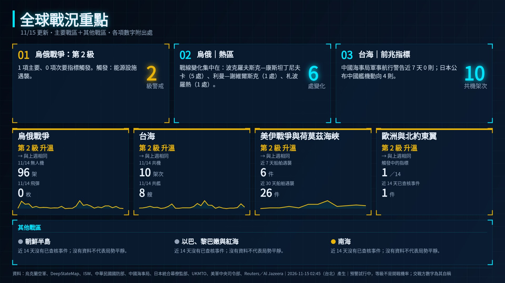
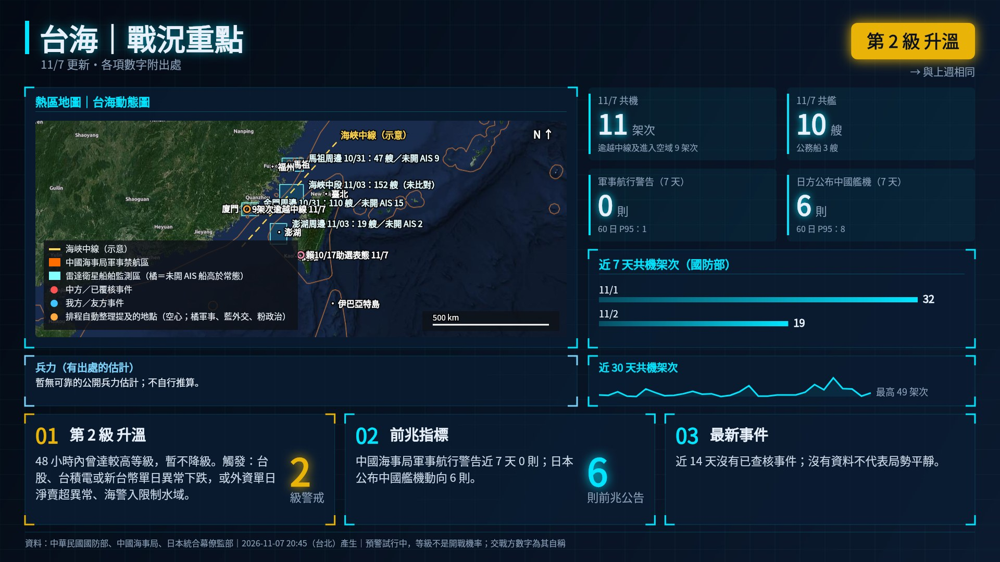
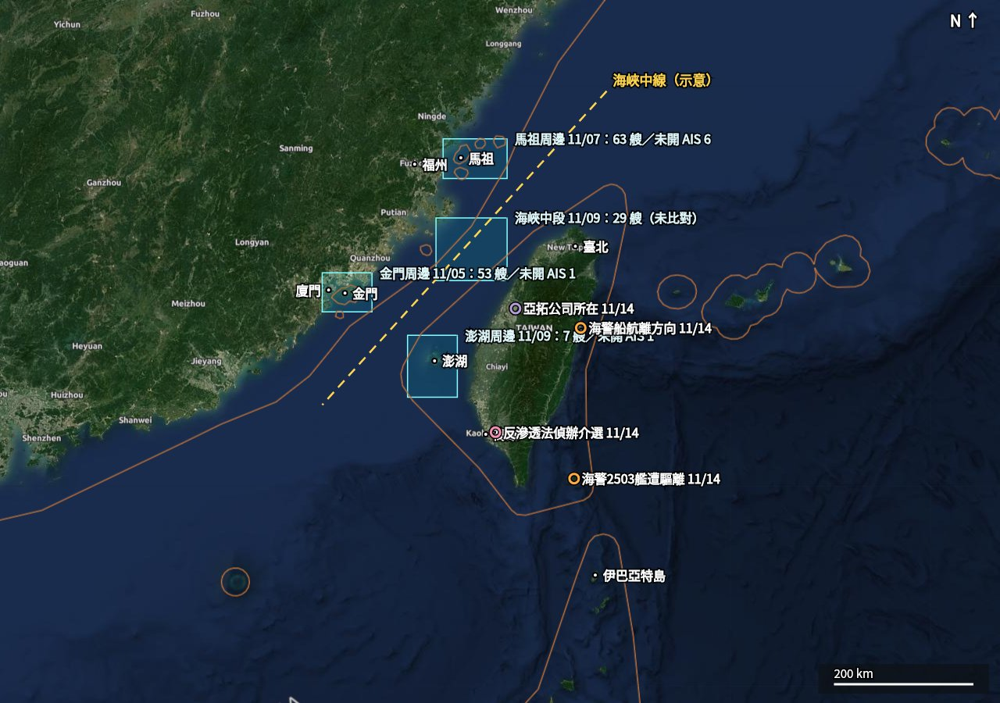
國防部 11/7 通報（前 24 小時）：共機 11 架次（逾越中線及進入空域 9 架次）、共艦 10 艘、公務船 3 艘。國防部未公布共機精確位置，圖上不標航跡。日本統合幕僚監部近 7 天公布中國艦艇／軍機動向 6 則。雷達衛星（Global Fishing Watch）最近過境：金門周邊 110 艘（未開 AIS 15）、馬祖周邊 47 艘（未開 AIS 9）、澎湖周邊 19 艘（未開 AIS 2）、海峽中段 152 艘。預警第 2 級 升溫，觸發：台股、台積電或新台幣單日異常下跌，或外資單日淨賣超異常、海警入限制水域。
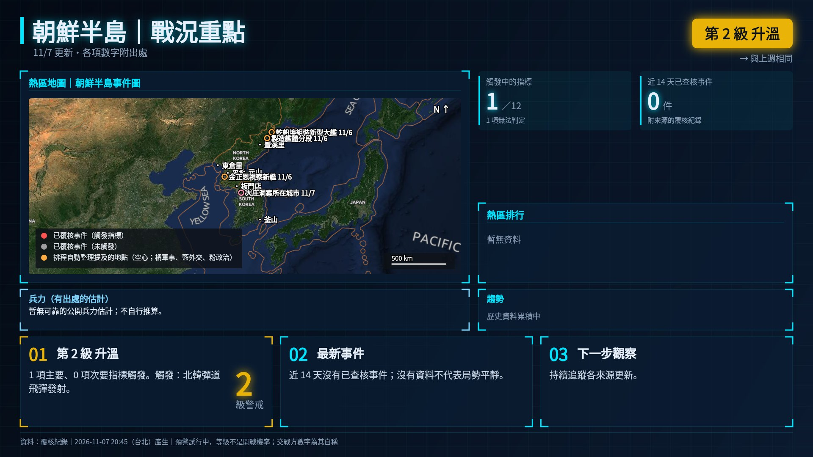
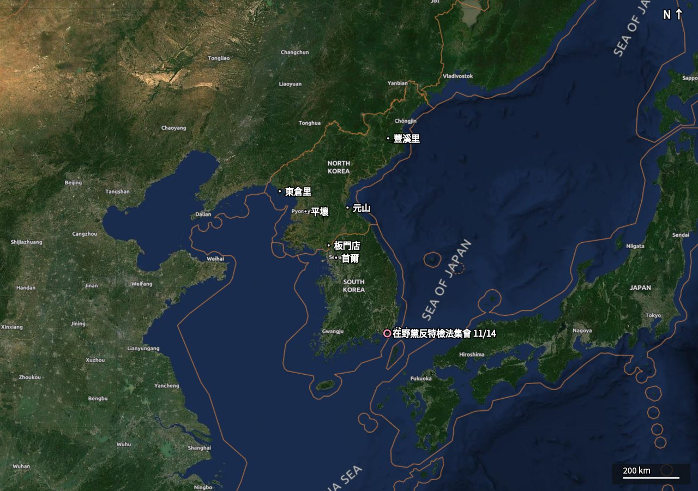
預警第 2 級 升溫，觸發：北韓彈道飛彈發射。近 14 天沒有附座標的已覆核事件；圖上空心點是排程自動整理提及的地點，不是查核過的事件位置。
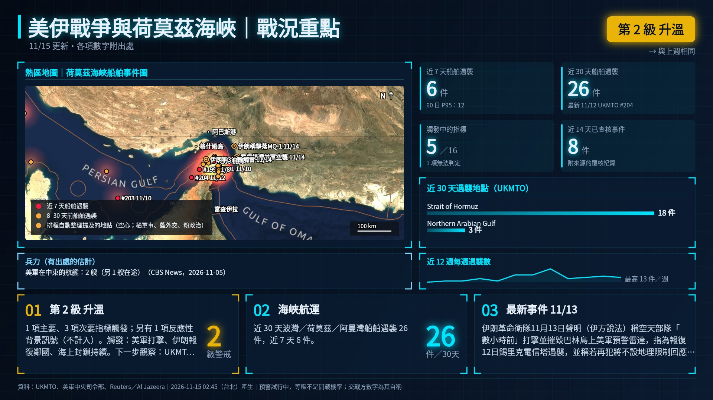
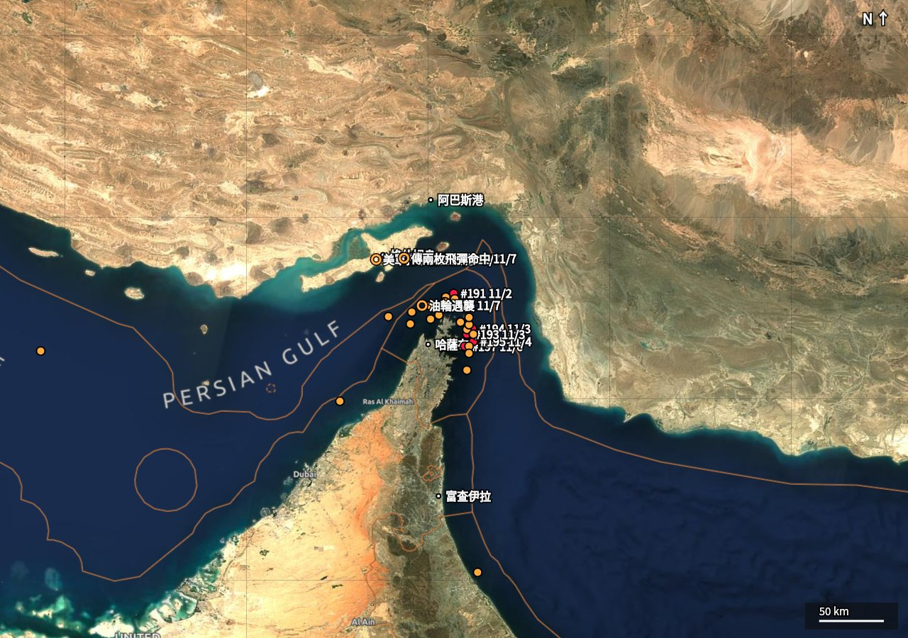
UKMTO 通報（台北時間）：近 30 天波灣／荷莫茲／阿曼灣船舶遇襲 32 件，近 7 天 7 件；最新為 11/6 Strait of Hormuz（UKMTO #197）。預警第 1 級 無升級跡象（戰事持續中），觸發：新制裁或航空公司停飛。
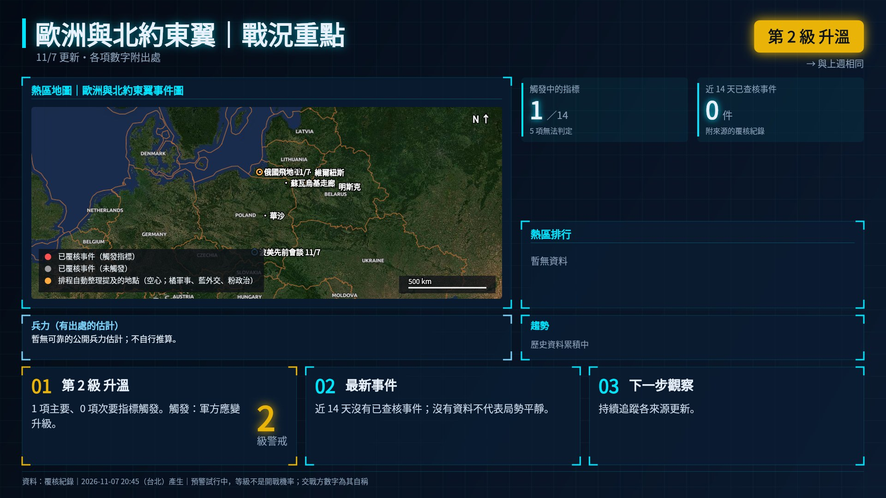
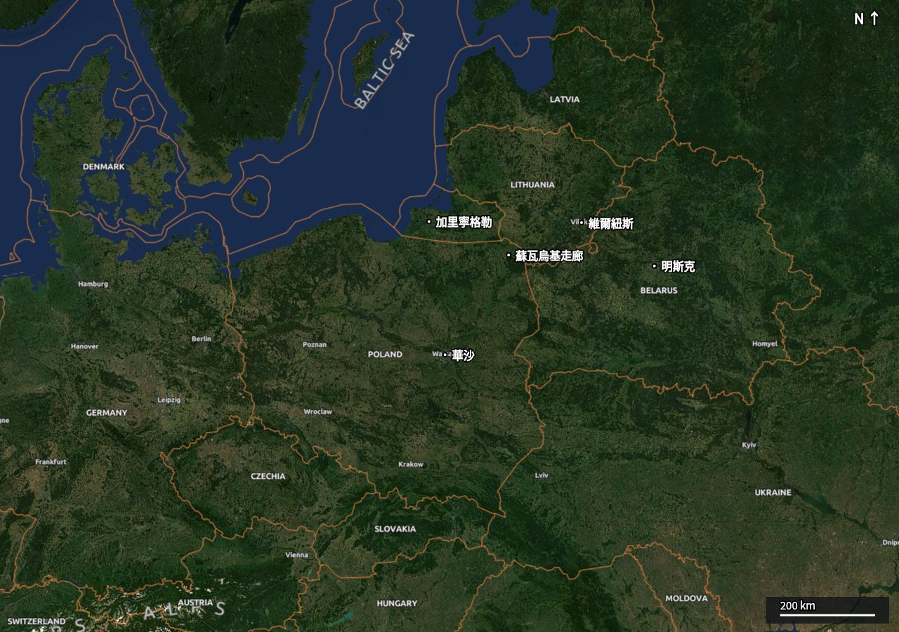
預警第 2 級 升溫，觸發：軍方應變升級。近 14 天沒有附座標的已覆核事件；圖上空心點是排程自動整理提及的地點，不是查核過的事件位置。
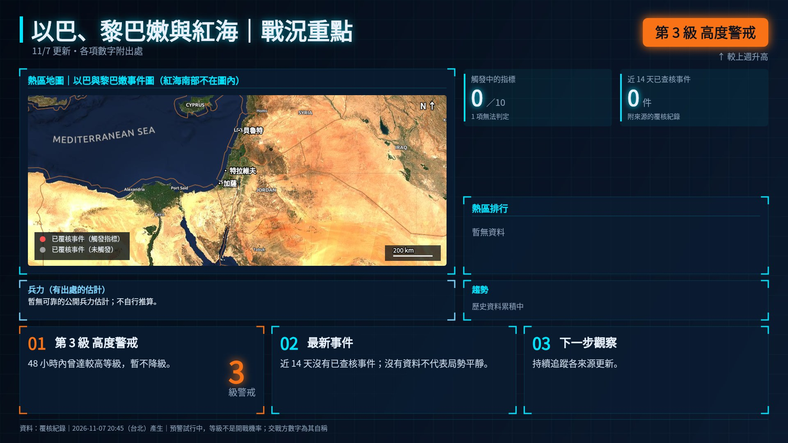
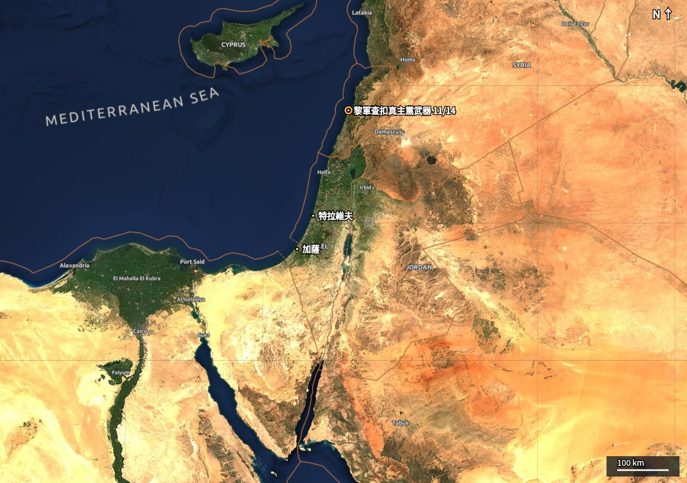
預警第 3 級 高度警戒。近 14 天沒有附座標的已覆核事件，圖上只標地名；沒有資料不代表局勢平靜。
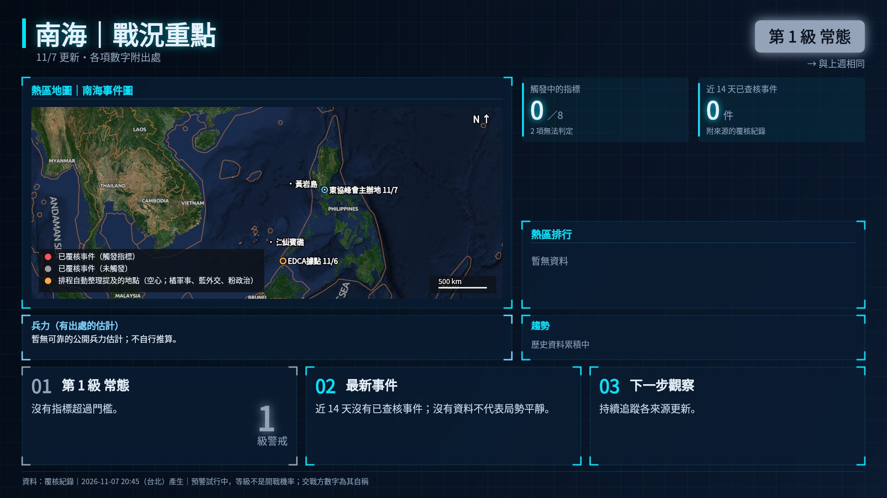
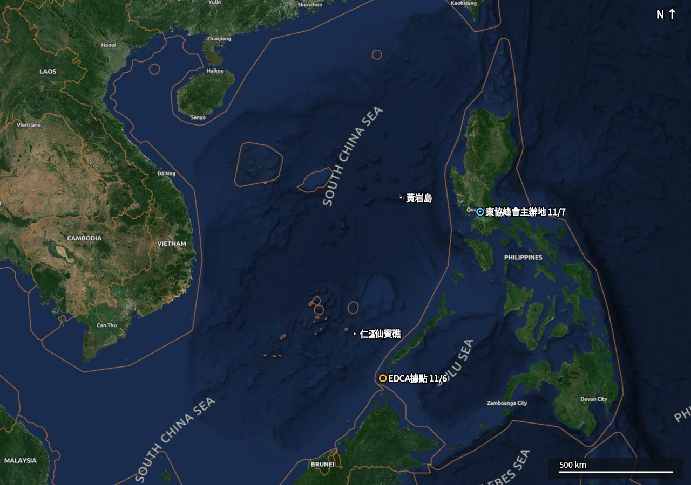
預警第 1 級 常態。近 14 天沒有附座標的已覆核事件；圖上空心點是排程自動整理提及的地點，不是查核過的事件位置。
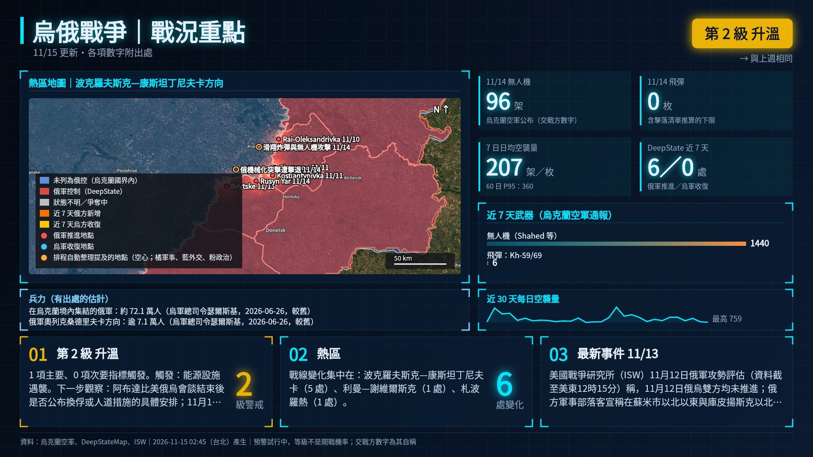
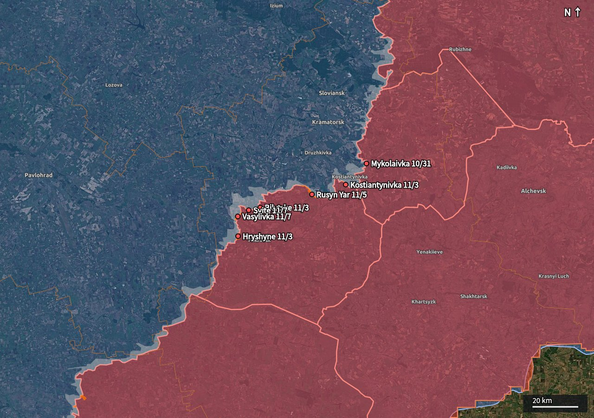
10/30→11/7 DeepState 全線更新：俄軍推進 10 處（Mykolaivka、Hoptivka、Hulyaypilske、Hirke等），烏軍收復 0 處。本圖範圍控制區比較：俄方新增約 16 km²、烏方收復約 0 km²（像素估算）。烏克蘭空軍通報 11/06 無人機 227、飛彈 0（烏方數字）。預警第 2 級 升溫，觸發：空襲量偏高、新制裁或航空公司停飛。
11/6 烏克蘭空軍通報：無人機 227 架、飛彈 0 枚；7 日日均 360（交戰方公布數字）。
戰場圖控制區資料：DeepStateMap.live（烏克蘭團隊依公開資料整理，非獨立證實；依其授權附出處使用）。另可對照 ISW 每日評估。
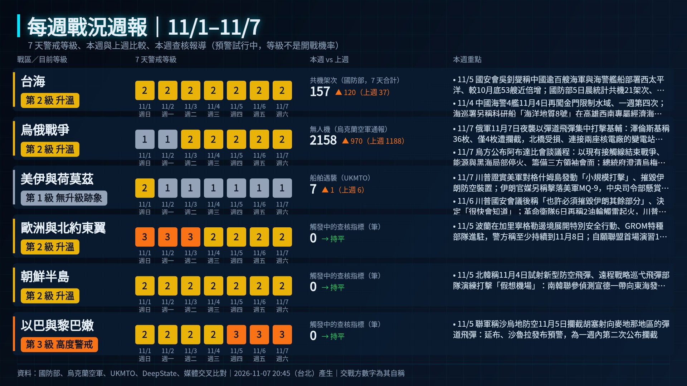
交戰方數字為其自稱。「政府投降」「國家戰敗」一類訊息一律是假訊息。本站為個人整理，非官方資訊。